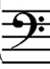
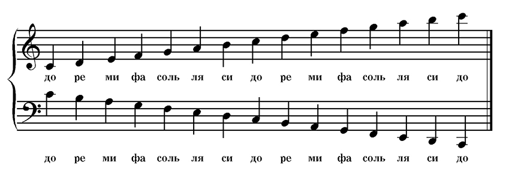

Урок 21. Басовый ключ.
Теория
Басовый ключ — это музыкальный ключ, который используется для записи низких звуков. Его ещё называют ключом Фа, потому что точка между двумя точками ключа указывает на ноту Фа малой октавы.
- Басовый ключ применяется для партий левой руки в фортепиано, а также для таких инструментов, как виолончель, контрабас, фагот, тромбон.
- В басовом ключе ноты располагаются ниже, чем в скрипичном, и их названия на линейках и между линейками отличаются.
- На четвёртой линии нотного стана в басовом ключе находится нота Фа малой октавы.
Басовый ключ помогает музыкантам правильно читать и исполнять низкие звуки.
Знание расположения нот в басовом ключе важно для всех, кто играет на инструментах с широким диапазоном.
Басовый ключ обозначается специальным знаком, похожим на загнутую запятую с двумя точками.
Упражнения
- Распознавание ключа: Определите, какой ключ изображён и для каких звуков он используется (Басовый ключ — для низких звуков; На четвёртой линии — Фа малой октавы; Скрипичный ключ — для высоких звуков).
- Пение или игра: Пропойте или сыграйте гамму Фа малой октавы в басовом ключе (Фа, Соль, Ля, Си, До, Ре, Ми, Фа).
Аудио-примеры
Звучание нот в басовом ключе:
Визуальные примеры
Басовый ключ на нотном стане:

Расположение нот в басовом ключе:
